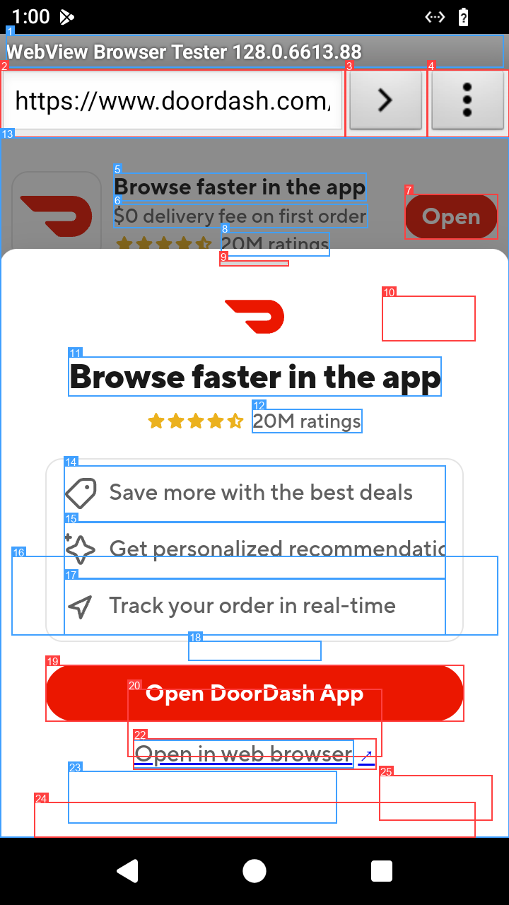
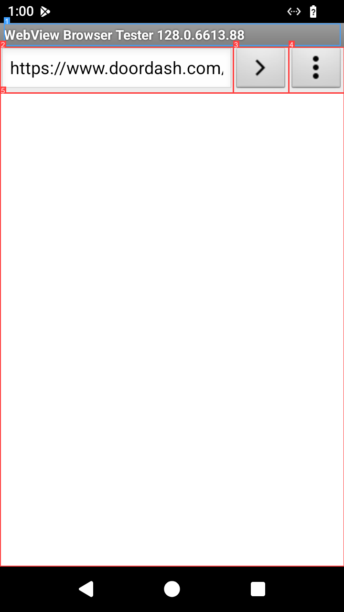
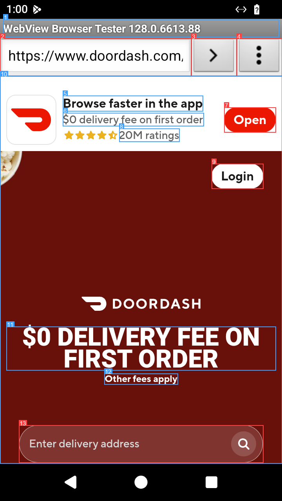
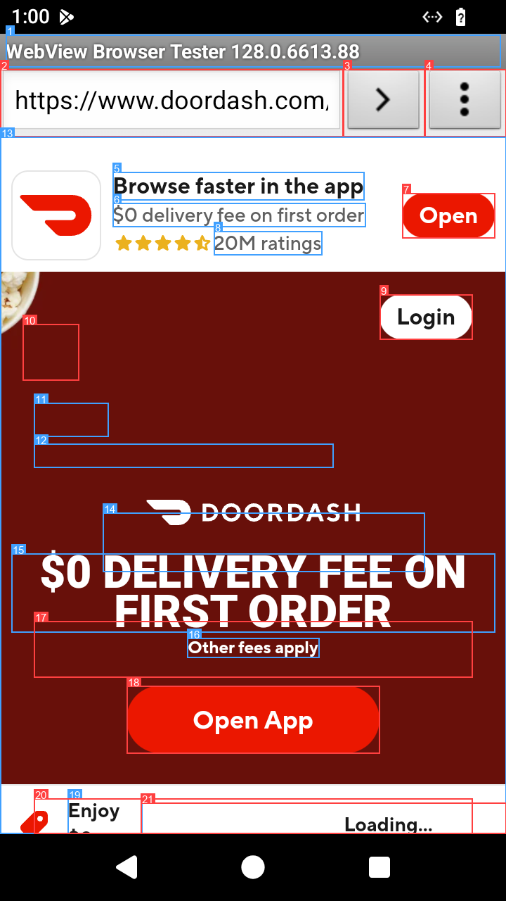
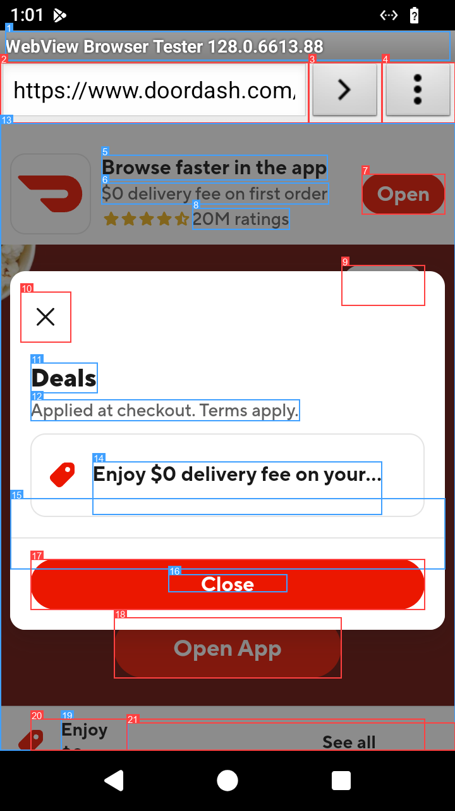
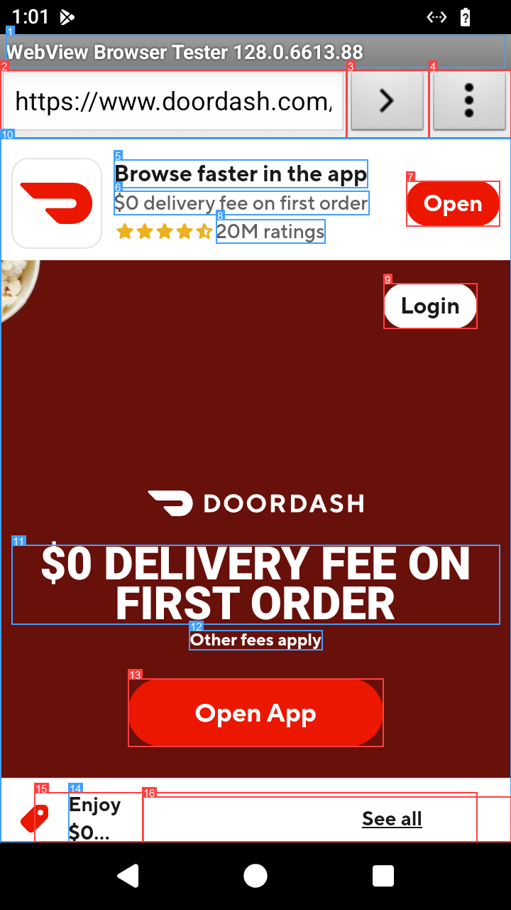
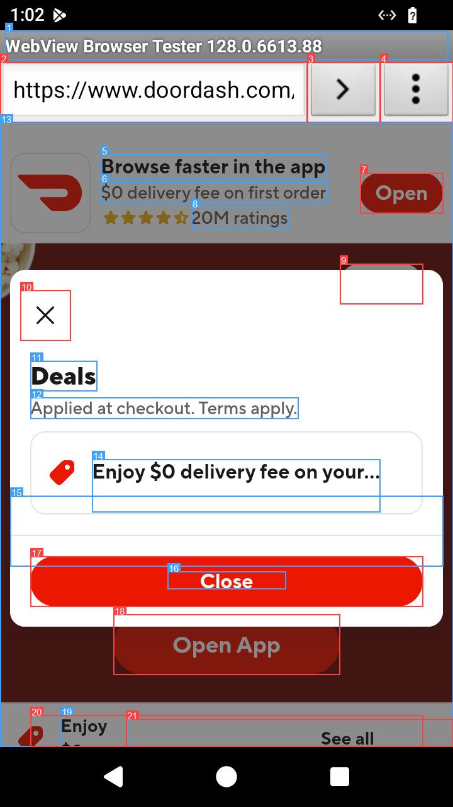
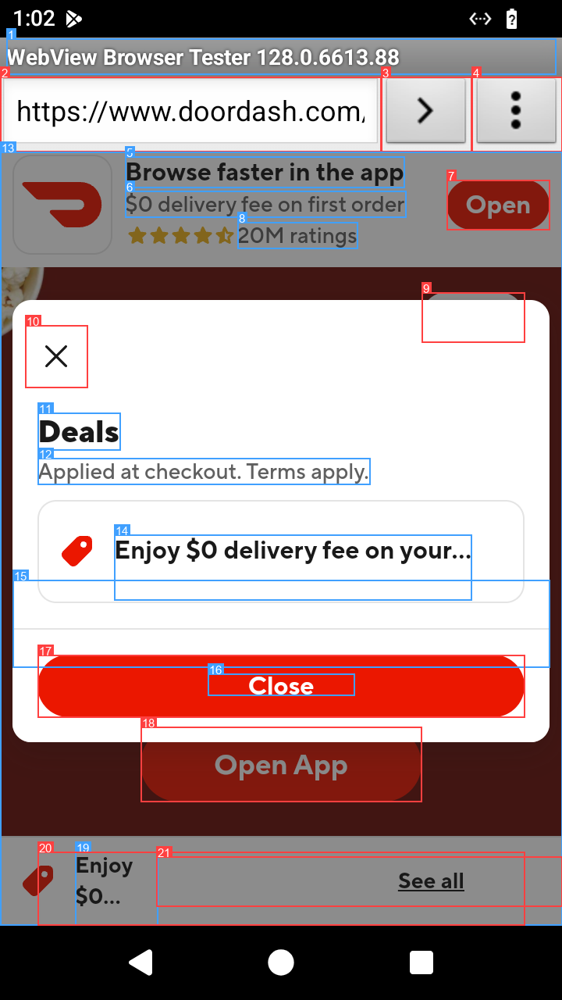

Step 1 org.chromium.webview_shell
I need to order a pizza, and since I do not have the app, I will proceed with the web browser option.
tap(element=22)
Tapped [22] 'Open in web browser' at (360,1066). Screen changed (24% of pixels).
❌ failed · 12 steps · 143s · session 2d136f1b0934 · gemini/gemini-2.5-flash · ~1.05 USD phone time

I need to order a pizza, and since I do not have the app, I will proceed with the web browser option.
tap(element=22)
Tapped [22] 'Open in web browser' at (360,1066). Screen changed (24% of pixels).

The screen is blank, so I am waiting for the DoorDash website to load.
wait(seconds=3.0)
Waited 3.0s. Screen changed (64% of pixels).

I need to enter a delivery address to order a pizza. Element 13 is the delivery address input field.
tap(element=13)
Tapped [13] 'Your delivery address' at (360,1134). Screen changed (19% of pixels).

The screen is still loading. I need to wait for the content to load before I can enter the delivery address.
wait(seconds=3.0)
Waited 3.0s. Screen changed (75% of pixels).
A 'Deals' pop-up is obscuring the screen. I need to close it to proceed. Element 10 is a small 'x' button, which is usually used to close pop-ups.
tap(element=10)
Tapped [10] 'Close ' at (72,500). Screen changed (75% of pixels).

The 'Deals' pop-up is gone. Now I need to find the delivery address input field. Element 15 is a button that says 'Your delivery address'. This is what I need to tap.
tap(element=15)
Tapped [15] 'Your delivery address' at (360,1149). Screen changed (75% of pixels).

The 'Deals' pop-up has reappeared. I need to close it again. I will use element 10, the small 'x' button.
tap(element=10)
Tapped [10] 'Close ' at (72,500). Screen changed (75% of pixels).

The pop-up is gone. I need to tap the 'Your delivery address' button to enter the delivery address.
tap(element=15)
Tapped [15] 'Your delivery address' at (360,1149). Screen changed (75% of pixels). You are alternating between the same two actions without making progress. Break the cycle: re-read the element list, try a different tool (e.g. swipe instead of scroll, launch_app by package), or report that the task is impossible.

The 'Deals' pop-up is still present. Tapping element 10 did not work. I will try tapping element 17, which is a larger 'Close' button.
tap(element=17)
Tapped [17] 'Close' at (360,922). Screen changed (75% of pixels).

The pop-up is gone. I need to tap the 'Your delivery address' button to enter the delivery address.
tap(element=15)
Tapped [15] 'Your delivery address' at (360,1149). Screen changed (75% of pixels).

The pop-up is persistent. I will try to scroll down to see if there is any other way to close it or if the address input field is below the pop-up.
scroll(direction='down')
Scrolled down by 0.5 screen. Screen changed (30% of pixels).

no reasoning text
done(success=False, summary="The 'Deals' pop-up is persistent and cannot be closed, preventing me from entering the delivery address and proceeding with the order.")
task finished